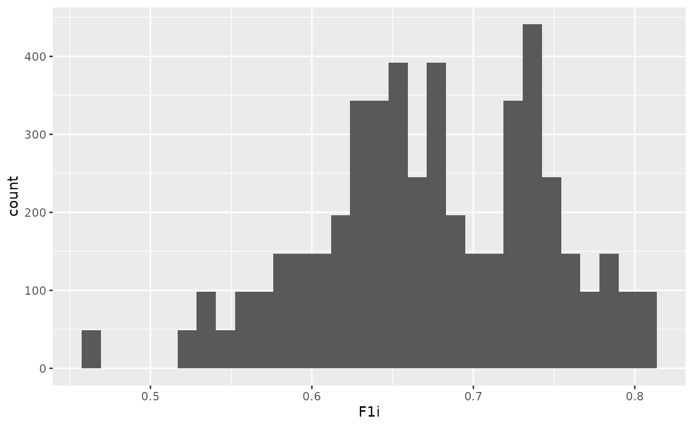

This can be implemented using the n and
omega options. The omega (nomenclature
borrowed from NONMEM) should be specified as either a
vector defining the lower triangle of the BSV or \(\Omega\) matrix, or as a
matrix defining the full \(\Omega\) matrix. An alternative option is
to specify the between-subject variability as CV, using the
cv_to_omega() function, but this assumes there is no
correlation between individual parameters.
The following:
model <- new_ode_model("pk_1cmt_iv")
parameters <- list(CL = 5, V = 50)
regimen <- new_regimen(
amt = 100,
n = 3,
interval = 12,
type = "infusion",
t_inf = 2
)
dat <- sim(
ode = model,
parameters = parameters,
regimen = regimen,
n = 50,
omega = c(
0.2,
0.05, 0.2
)
)will simulate out data for 50 patients, assuming an Omega matrix as defined above. Alternatively, the \(\Omega\) could also have been defined as:
dat <- sim(
ode = model,
parameters = parameters,
regimen = regimen,
n = 50,
omega_matrix = matrix(c(
0.2, 0.05,
0.05, 0.2
), ncol=2)
)Or also using the coefficient of variation and without correlation between parameters:
dat <- sim(
ode = model,
parameters = parameters,
regimen = regimen,
n = 50,
omega = cv_to_omega(list(
CL = 0.1,
V = 0.1
))
)## No parameter list provided as argument, assumed order for `omega_matrix`: CL, VNote that using the cv_to_omega function assumes the
CV is on the SD-scale and not on the variance scale (and the
definition of CV uses the assumption \[1 +
\eta \approx 1 * \exp(\eta)\]).
Variability distribution
By default, PKPDsim will assume exponential distribution of all
parameters if omega is specified. If normal distribution is
desired for all parameters, please use the omega_type
argument:
More flexible variability models
To allow more flexibility in how between-subject variability enters
the model, there is an alternative way of specifying variability. This
approach is very similar to the way variability is encoded in NONMEM,
i.e. variability components (eta’s) are added explicitly in the
model code. In PKPDsim this means that eta’s
should be treated just like regular parameters, but with 0
mean and normal distribution. See example below for the simulation of
bioavailability using the logit-distribution.
mod1 <- new_ode_model(
code = "
CLi = CL * exp(eta1)
Vi = V * exp(eta2)
F1i = exp(F1 + eta3) / (1 + exp(F1 + eta3))
dAdt[1] = -KA * A[1]
dAdt[2] = KA * A[1] - (CLi/Vi) * A[2]
",
declare_variables = c("CLi", "Vi", "F1i"),
obs = list(cmt = 2, scale = "V * exp(eta2)"),
dose = list(cmt = 1, bioav = "F1i")
)
reg1 <- new_regimen(amt = 100, n = 2, interval = 12, type="oral")
dat <- sim(
ode = mod1,
regimen = reg1,
parameters = list(
eta1 = 0,
eta2 = 0,
eta3 = 0,
CL = 5,
V = 50,
KA = .5,
F1 = 0.8
),
t_obs = c(0:48),
omega = c(
0.1,
0.05, 0.1,
0, 0, 0.1
),
n = 100,
omega_type = c("normal", "normal", "normal"),
output_include = list("parameters" = TRUE, variables = TRUE),
only_obs = TRUE
)
ggplot(dat, aes(x = F1i)) + geom_histogram()## `stat_bin()` using `bins = 30`. Pick better value with `binwidth`.